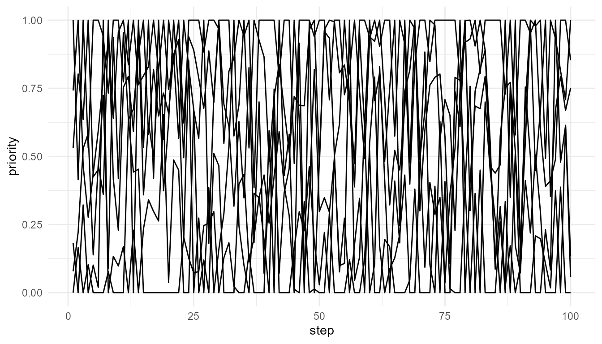

Attention and Competition
Source:vignettes/attention-and-competition.Rmd
attention-and-competition.RmdPurpose
This article explains the theoretical logic behind
attention_competition_model(). The function models
attention as a process of priority-based selection, in
which multiple signals compete for limited processing resources.
Attention is central to many theories of consciousness because conscious access often depends on which information is selected, stabilized, amplified, or made available for further processing. However, attention and consciousness are not identical. This chapter therefore treats attention as an important mechanism related to consciousness, but not as consciousness itself.
The guiding question is:
How can attention be represented as a competition among signals with different levels of salience, novelty, and goal relevance?
Attention as selective priority
Cognitive systems cannot process all available information with equal depth. At any moment, many signals are present: sensory inputs, memories, goals, emotions, bodily states, and expectations. Attention helps prioritize some signals over others.
In cognitive neuroscience, attention is often described as a selective mechanism that enhances some information while suppressing or filtering other information (Desimone and Duncan 1995; Posner 1994). This selectivity is necessary because processing resources are limited.
In simplified terms, attention answers the question:
Which signal should receive priority now?
This question is closely connected to consciousness, because information that receives priority is often more likely to become available for report, memory, decision-making, or action.
Attention and consciousness
Attention and consciousness are strongly related, but they should not be treated as the same thing. A signal may be attended without becoming consciously reportable. Similarly, some forms of conscious experience may occur without strong focused attention.
This distinction is important for consciousnessModelR.
The function attention_competition_model() does not
simulate consciousness. It simulates a possible
precondition or gateway process for
conscious access: the selection of one signal from among competing
alternatives.
In this sense, attention can be understood as a filtering or
prioritization stage. Selected information may later become globally
available through mechanisms represented by
simulate_global_workspace() or
broadcast_network(), but selection alone is not equivalent
to subjective experience.
Theoretical background
Many models of attention emphasize competition. Signals compete because not all information can be processed, stored, reported, or acted upon at the same time.
Competition may be influenced by several factors:
- Salience: how strong, intense, or noticeable a signal is.
- Novelty: how new, unexpected, or surprising a signal is.
- Goal relevance: how important a signal is for the current task or intention.
- Noise: random fluctuation, uncertainty, or background variability in the system.
A sudden loud sound may capture attention because it is salient. A new event may capture attention because it is novel. A quiet but task-relevant signal may be prioritized because it matters for current goals.
The model in this package represents these factors explicitly.
Relation to the package
The function attention_competition_model() creates a set
of competing signals. Each signal is assigned values for salience,
novelty, and goal relevance. These values are combined into a priority
score using user-defined weights.
The signal with the highest priority score is selected at each time step.
| Theoretical concept | Package representation |
|---|---|
| Competing stimuli or representations | Simulated signals |
| Perceptual strength | salience |
| Unexpectedness or newness | novelty |
| Task importance | goal_relevance |
| Attentional policy | weights |
| Background variability | noise |
| Selected attentional target | selected_signal |
This structure allows students to explore how different assumptions about attention affect selection.
Basic simulation
The following example simulates six competing signals over 100 time steps. The weights give moderate importance to salience, novelty, and goal relevance.
attn <- attention_competition_model(
n_signals = 6,
steps = 100,
weights = c(0.4, 0.3, 0.3),
seed = 22
)
head(attn)
#> step signal salience novelty goal_relevance priority selected
#> 1 1 S1 0.3042768 0.6151681 0.4736784 0.18182488 FALSE
#> 2 1 S2 0.4747389 0.7391713 0.8581398 0.53170075 FALSE
#> 3 1 S3 0.9935258 0.4172400 0.4353518 0.74199199 FALSE
#> 4 1 S4 0.5206539 0.3726250 0.0822696 0.00000000 FALSE
#> 5 1 S5 0.8432310 0.9684221 0.4207948 1.00000000 TRUE
#> 6 1 S6 0.7233145 0.6074081 0.1749127 0.07868366 FALSE
#> selected_signal
#> 1 S5
#> 2 S5
#> 3 S5
#> 4 S5
#> 5 S5
#> 6 S5
plot_consciousness_sim(
attn,
x = "step",
y = "priority",
group = "signal"
)
Which signal is selected?
The selected_signal column shows which signal won the
attentional competition at each time step.
table(attn$selected_signal)
#>
#> S1 S2 S3 S4 S5 S6
#> 6 66 288 6 192 42This table helps identify whether one signal dominated the competition or whether selection shifted among several signals.
Interpreting priority
The priority score is not a measure of consciousness. It represents the degree to which a signal is favored by the model’s attentional rule.
A high-priority signal may be more likely to influence later processing, but the model does not claim that the selected signal is consciously experienced. Instead, the selected signal can be interpreted as a candidate for further access, broadcast, or report.
This distinction is important because attention is often necessary for conscious access, but it may not be sufficient.
Changing theoretical assumptions
Different theories or experimental situations may emphasize different drivers of attention.
A salience-dominated model prioritizes intense or noticeable signals. A goal-dominated model prioritizes task-relevant signals. A novelty-dominated model prioritizes unexpected or unfamiliar signals.
salience_focused <- attention_competition_model(
weights = c(0.8, 0.1, 0.1),
seed = 22
)
goal_focused <- attention_competition_model(
weights = c(0.1, 0.1, 0.8),
seed = 22
)
table(salience_focused$selected_signal)
#>
#> S2 S3 S5 S6
#> 6 438 132 24
table(goal_focused$selected_signal)
#>
#> S1 S2 S3 S5
#> 12 564 12 12Interpretation of the weight experiment
This comparison shows that attention is not simply a reaction to stimulus strength. The selected signal depends on the model’s assumptions about what matters.
If salience is heavily weighted, strong signals dominate. If goal relevance is heavily weighted, task-relevant signals dominate. If novelty is heavily weighted, unexpected signals become more likely to capture priority.
This is theoretically important because conscious access often depends on more than raw sensory intensity. A weak but goal-relevant signal may be selected over a stronger but irrelevant one.
Novelty and adaptation
In the simulation, novelty can decline over time. This reflects a simple idea: repeated signals often become less attention-grabbing. A signal that is initially surprising may become less novel after repeated exposure.
This is not a full model of habituation or predictive processing, but it provides a useful teaching approximation. Students can observe how changing novelty affects competition and selection.
novelty_model <- attention_competition_model(
n_signals = 5,
steps = 80,
weights = c(0.2, 0.6, 0.2),
seed = 5
)
table(novelty_model$selected_signal)
#>
#> S1 S2 S3 S4 S5
#> 10 135 175 70 10Attention as a gateway to access
In many access-oriented theories, attention helps determine which information becomes available for broader processing. However, attention alone does not necessarily imply global access.
This package separates these stages:
-
attention_competition_model()models selection. -
simulate_global_workspace()models competition and possible ignition. -
broadcast_network()models the spread of selected information. -
consciousness_threshold()models threshold-based access-like classification.
This modular structure is useful because it prevents attention, access, and consciousness from being collapsed into a single concept.
Relation to other functions
| Related function | Relationship to attention |
|---|---|
simulate_global_workspace() |
Selected signals may become candidates for global access |
broadcast_network() |
Selected information may spread through a system |
consciousness_threshold() |
Priority or activation can be compared against an access threshold |
plot_consciousness_sim() |
Visualizes priority dynamics over time |
The selected signal from attention_competition_model()
can therefore be interpreted as an input to later access or broadcast
models.
What the model captures
The function captures several important ideas:
- multiple signals compete for priority;
- selection depends on more than signal strength;
- attention can be shaped by goals and novelty;
- model assumptions influence which signal wins;
- selection can change over time.
These features make the function useful for teaching attention as an active selection process rather than a passive response to stimulation.
What the model does not capture
The model is intentionally simplified. It does not include:
- spatial attention;
- feature binding;
- neural oscillations;
- top-down executive control in detail;
- working memory limitations;
- recurrent processing;
- subjective experience.
It also does not determine whether a selected signal is conscious. It only models a selection process that may contribute to conscious access in some theories.
Educational use
This function is useful for classroom and portfolio purposes because it allows theoretical assumptions to be tested directly. Students can ask:
- What happens when salience dominates attention?
- What happens when goal relevance dominates?
- How does novelty influence selection?
- Does the same signal always win?
- How does noise affect stability?
- Is selection enough for consciousness?
These questions help clarify the relationship between attention and consciousness without overstating what the model can show.
Key takeaway
Attention is a priority-selection process. It determines which signals receive enhanced processing, but it is not identical to consciousness.
attention_competition_model() provides a simplified
educational model of this process. It helps learners explore how
salience, novelty, goal relevance, and noise shape selection, and how
selected information may become a candidate for later global access or
broadcast.